首页>产品中心>行业解决方案
首页>产品中心>行业解决方案
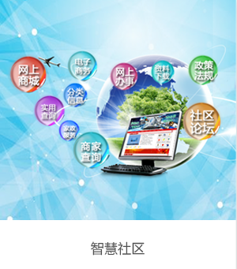
互联网+政务
政务办公从简单的“一站式”服务，转变为一体化的“互联网+政务服务”，更有利于利用先进科技的手段提高服务水平。 互联网政务用户能够及时了解当地热点新闻、公益活动、交通情况、政府政策等，从而达到便民的目的。目前一共分五大类型：“宜居、教育、健康、文化、阅读”。为老百姓提供政务办事相关的各类法律法规查看，以方便维护自身合法利益。同时，对辖区有效的各类政策进行公布、允许或要求公开的办事结果予以公示。
电子投票系统
电子投票系统为手写真彩电容触控屏、音视频播放、发言稿同步播放。 是专为各地区投票选举、人大、政协、政府等会议设计，无线台式，手写，真彩电容触控大屏幕。具有签到、投票表决、音视频播放、发言稿同步播放、文字编辑、文件上传下载等功能。 支持多种签到方式，按键签到和验证码签到。 支持议题和结果的浏览、批量表决、名单式选举、 自由评议、评分等功能。电子桌牌功能，在会议桌显示人员姓名、提示座位，服务器统一配置桌牌。 适合多种场合需求，支持无线和有线通讯。远程视频接访系统
远程视频接访系统，以可视化接访应用为核心，采用高效的视音频编解码处理技术，实现远程网络视音频图像传输 功能，系统兼容IP或专线方式网络部署，可以跨越空间距离实现“面对面”即时互动交流，上访群众只需要到当地基层单位就能通过视音频与上级单位领导实现“面对面”交流，反映诉求，让群众上访更加便捷，让领导决策更加直接、有效。该系统可广泛应用于政府、公安、检察院、法院、工商、税务等领域。HIS系统
互联网+HIS 3.0系统是按照医院信息科学的原理，采用先进的信息系统开发技术，实现高度信息集成的完整的医院信息系统。从医院总体上把握关键信息流，建立一套以围绕病人在医院活动的主要环节为中心的数据模型和功能模型，以及结合互联网应用（移动支付平台、微信公众号微医院平台、网上挂号会诊平台、网上医疗视频平台），实现各系统之间信息高度共享，达到辅助诊疗和辅助医院管理的目的，更好地为病人服务。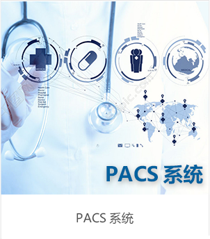
PACS系统
WS 临床信息系统(Clinical Information System,CIS)支持医院医护人员的临床活动，收集和处理病人的临床医疗信息，丰富和积累临床医学知识，并提供临床咨询、辅助诊疗、辅助临床决策，提高医护人员的工作效率，为病人提供更多、更快、更好的服务。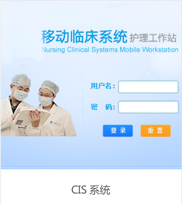
CIS系统
WS 临床信息系统(Clinical Information System,CIS)支持医院医护人员的临床活动，收集和处理病人的临床医疗信息，丰富和积累临床医学知识，并提供临床咨询、辅助诊疗、辅助临床决策，提高医护人员的工作效率，为病人提供更多、更快、更好的服务。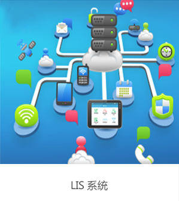
LIS系统
WS LIS检验管理信息系统是一个集检验业务、科室管理、质量控制、咨询服务于一体的数字检验信息化平台。能够充分满足医院实验室、医院集团、独立实验室、社区医疗、体检中心、临检中心及其它检验机构的专业化检验需求。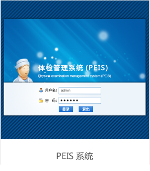
PEIS系统
WS EMR电子病历系统是长沙网舜临床医疗平台的核心系统，针对大型医院临床医疗信息化和区域一体化实现电子病历的专业解决方案。助力医院通过信息化手段全面提升医疗管理素质：提高医疗质量控制水平、改善治疗安全性、避免医疗差错、改善医疗费用使用的合理性等。电子病历系统
WS 临床信息系统(Clinical Information System,CIS)支持医院医护人员的临床活动，收集和处理病人的临床医疗信息，丰富和积累临床医学知识，并提供临床咨询、辅助诊疗、辅助临床决策，提高医护人员的工作效率，为病人提供更多、更快、更好的服务。教务管理系统
长沙网舜科技教务管理系统：充分利用互联网络B/S管理系统模式，以网络为平台，为学校教务系统的管理提供一个平台，帮助学校管理教务系统，一个帐号随时随处登录解决学校教务教学管理，包括教师管理、课程管理、考试管理、考试管理、宿舍管理等。并且学校可以自由选择需要的教务管理模块，灵活地定制符合学校自己实际情况的教务功能。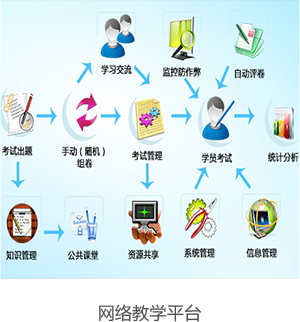
网络教学平台
长沙网舜网络教学平台提供一个低成本做在线教育整体解决方案，帮您打破所有技术壁垒， 最大限度地降低了建立网校的技术和资金门槛，功能包含在线直播教学、课程录播授课、考试题库、 智能排课、教学管理等。产品按需付费、成本可控，让您最小成本搭建您自己独立域名的网校平台教学实训软件系统
长沙网舜科技教学实训软件是一款依据长沙网舜公司多年的教育平台开发经验，具有强交互性的基于实践教育为主的自适应教学平台。可提供包括实验手册、教学视频、教师参考答案、学生答案模板、实验素材下载，多媒体播放等多种教学资源。目前平台涵盖软件开发、软件测试、电子商务、移动开发（Android、Apple）物联网、网络游戏、项目管理等多个领域，为高校搭建全方位互动式整体教育实践解决方案。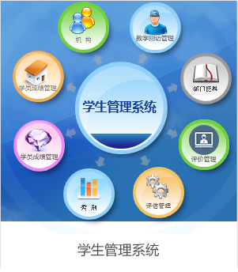
学生管理系统
长沙网舜科技学生管理系统以学校的学生信息管理为依托，结合教务教学管理，设计并开发一个学生信息管理系统，提供一个信息更新快捷、管理方便、功能设置合理的学生信息管理解决方案。针对学校大量的学生信息，就学生管理的几个方面，提供一个互动式的学生管理平台。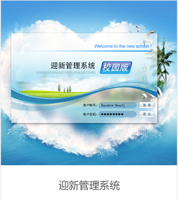
迎新管理系统
数字迎新管理系统是整个数字化校园的重要组成部分；主要是为了规范高校的迎新流程，提高高校的迎新效率，利用现代化的信息技术，以校内网络为通信媒介以信息化的迎新系统为展示方式助力学校迎新工作。 长沙网舜科技迎新系统涵盖了迎新网站、新生信息管理、迎新手续定制、学生报到、分班分学号、分宿舍、报到数据统计等一系列有关报到前、报到中、报到后的业务流程。系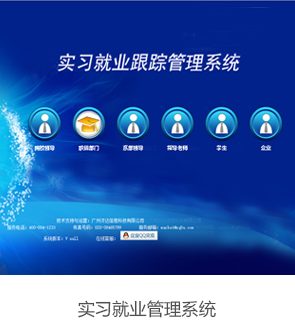
实习就业系统
长沙网舜科技实习管理系统/平台主要针对院校学生在校外实习中的联络不畅和管理不便而构建的，其主要目的是在学校（校内指导教师）、企业（企业指导教师）、学生、家长之间建立一个沟通的平台，使学校通过平台能有效与合理的管理在外实习的学生。 长沙网舜科技实习管理系统主要沟通方式为手机短信、Internet网络、固定电话等，只要有手机、网络或电话，就可以和院校保持联系，学校也可以通过这几种方式来管理实习中的学生。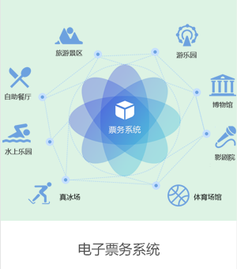
电子票务系统
电子票务系统又称自动检票售票系统，是针对人工售检票推出的一种线上售票、专用设备自动检票、电子化信息管理的计算机网络系统，主要由集票模块、检票模块、数据管理模块三部分组成。 采用电子票务系统来实现整个景区售票、检票、票务统计等工作，实现了计算机售票、检票、查询、汇总、统计、报表等各种门票通道控制管理功能及全方位实时监控和管理功能，杜绝了漏票、伪票、复票、人情票及内部财务漏洞等不良现象。智慧旅游公众支撑服务平台
智慧旅游公众支撑服务平台，能够为地方政府、旅游局、旅游景区、酒店、客栈、旅行社等旅游单位提供完整的智慧旅游线上、线下 O2O 技术支撑。 该平台可以动态、可扩展的接入多种应用终端传感世点，融合多种服务系统，并提供旅游景点的智慧营销、智慧导游、智慧导购、交易结算、旅游景点的智慧管理、旅游景点的信息资源管理等基础应用服务以及旅游相关的其它行业的增值类应用服务，同时为其他涉旅企业提供平台支撑的开放性业务。电子商务平台
景区电子商务系统该软件主要实现电子票、酒店预订、旅游产品及旅游线路的销售系统，通过网络银行实现网上支付以及数据的后台管理。全面提升订票中心的客服、销售、财务、营销水平，使订票中心在业务不断增长的发展过程中再无瓶颈。在景区的领导下，对景区的所有旅游信息、资源和产品进行整合。 游客可以通过这个电子商务平台，选择并定购相应的旅游产品。由电子商务平台安排各自的旅游企业为游客提供相应的服务。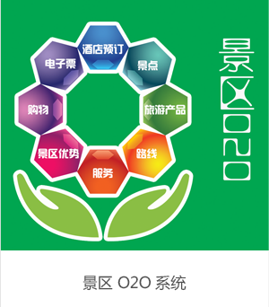
景区O2O系统
景区O2O 系统专为景区打造为景区提供“吃、住、行、游、购、娱”等一条龙在线交易服务，支持供应商（当地商户）入驻，系统包含2套销售体系，同时支持在线零售与同业采购，构建起一个平台、供应商、分销商、直客多方传播互动与在线交易的的高品质电子商务平台。利用大流量 IP 微信和支付宝，为景区O2O电商平台提供强有力的支撑，市场空间非常广阔。 专为景区旅游资源进行定制，涵盖签证、自由行、当地跟团、酒店、门票、会议、景区交通、餐饮、当地购物等自由产品。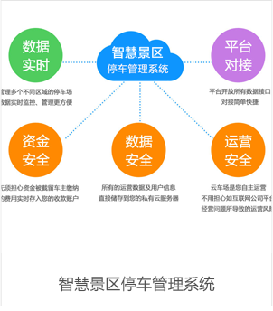
智慧景区停车管理系统
数字迎新管理系统是整个数字化校园的重要组成部分；主要是为了规范高校的迎新流程，提高高校的迎新效率，利用现代化的信息技术，以校内网络为通信媒介以信息化的迎新系统为展示方式助力学校迎新工作。 长沙网舜科技迎新系统涵盖了迎新网站、新生信息管理、迎新手续定制、学生报到、分班分学号、分宿舍、报到数据统计等一系列有关报到前、报到中、报到后的业务流程。系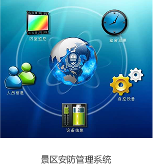
景区安防管理系统
景区安防管理系统用于对监控、安全、巡逻进行有效的管理，通过此系统可以实时查看景区各安全点的实况，同时能对景区安全人员进行严格管控，能按照物业管理的规定进行定时的巡逻，避免发生安全隐患。 巡更线路设定合理的检测点安装信息钮（巡更点），由控制中心电脑软件编排巡更班次、时间间隔、线路、有效地管理巡更员巡视活动，增强安保防范措施。丰富的数据查询功能，电脑对采集回来的数据进行整理、存档，自动生成分类记录。教务管理系统
长沙网舜科技教务管理系统：充分利用互联网络B/S管理系统模式，以网络为平台，为学校教务系统的管理提供一个平台，帮助学校管理教务系统，一个帐号随时随处登录解决学校教务教学管理，包括教师管理、课程管理、考试管理、考试管理、宿舍管理等。并且学校可以自由选择需要的教务管理模块，灵活地定制符合学校自己实际情况的教务功能。网络教学平台
长沙网舜网络教学平台提供一个低成本做在线教育整体解决方案，帮您打破所有技术壁垒， 最大限度地降低了建立网校的技术和资金门槛，功能包含在线直播教学、课程录播授课、考试题库、 智能排课、教学管理等。产品按需付费、成本可控，让您最小成本搭建您自己独立域名的网校平台教学实训软件系统
长沙网舜科技教学实训软件是一款依据长沙网舜公司多年的教育平台开发经验，具有强交互性的基于实践教育为主的自适应教学平台。可提供包括实验手册、教学视频、教师参考答案、学生答案模板、实验素材下载，多媒体播放等多种教学资源。目前平台涵盖软件开发、软件测试、电子商务、移动开发（Android、Apple）物联网、网络游戏、项目管理等多个领域，为高校搭建全方位互动式整体教育实践解决方案。学生管理系统
长沙网舜科技学生管理系统以学校的学生信息管理为依托，结合教务教学管理，设计并开发一个学生信息管理系统，提供一个信息更新快捷、管理方便、功能设置合理的学生信息管理解决方案。针对学校大量的学生信息，就学生管理的几个方面，提供一个互动式的学生管理平台。迎新管理系统
数字迎新管理系统是整个数字化校园的重要组成部分；主要是为了规范高校的迎新流程，提高高校的迎新效率，利用现代化的信息技术，以校内网络为通信媒介以信息化的迎新系统为展示方式助力学校迎新工作。 长沙网舜科技迎新系统涵盖了迎新网站、新生信息管理、迎新手续定制、学生报到、分班分学号、分宿舍、报到数据统计等一系列有关报到前、报到中、报到后的业务流程。系实习就业系统
长沙网舜科技实习管理系统/平台主要针对院校学生在校外实习中的联络不畅和管理不便而构建的，其主要目的是在学校（校内指导教师）、企业（企业指导教师）、学生、家长之间建立一个沟通的平台，使学校通过平台能有效与合理的管理在外实习的学生。 长沙网舜科技实习管理系统主要沟通方式为手机短信、Internet网络、固定电话等，只要有手机、网络或电话，就可以和院校保持联系，学校也可以通过这几种方式来管理实习中的学生。- 智慧政务
- 智慧医疗
- 智慧教育
- 智慧旅游